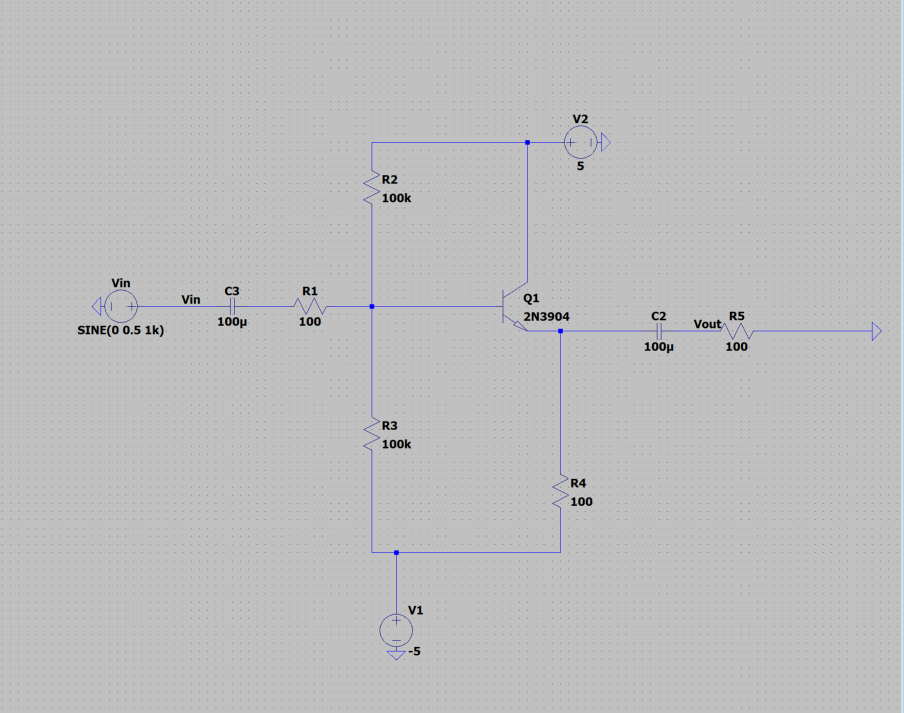
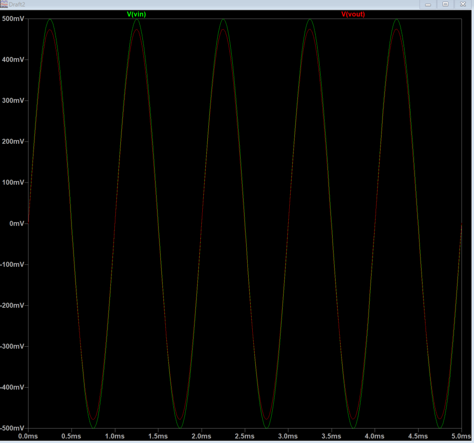
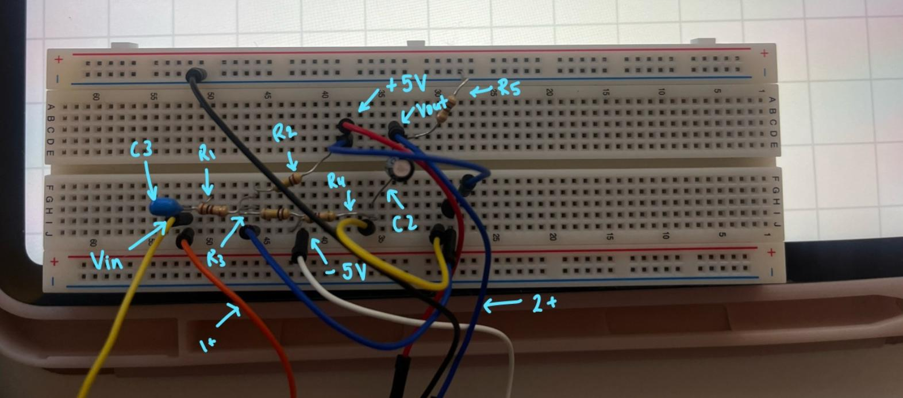

Project
Single Transistor Amplifier
A 2N3904 common-collector (emitter-follower) stage designed as a buffer between a 100 Ω source and a 100 Ω load.
What I did
- Designed the stage for high input impedance and low output impedance.
- Simulated midband gain, linearity, and distortion.
- Built and measured the stage on the bench.
Result
About 0.9 gain with low harmonic distortion, verified in simulation and on the bench.


